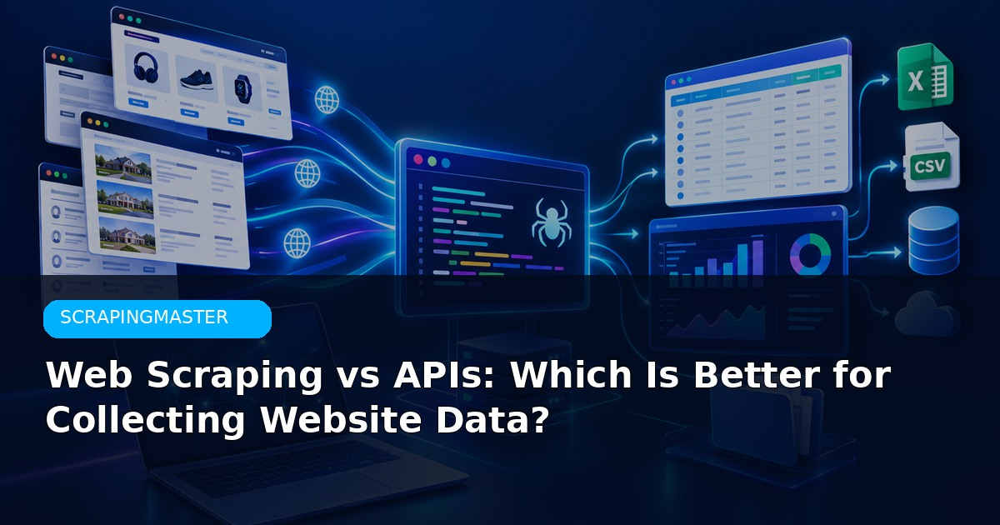

An official API is almost always the more stable and compliant option when one exists. Scraping becomes useful when no usable API is available or the API does not expose the fields you need.
Most scraping projects fail because of poor planning, not because of missing advanced techniques. Define the exact fields you need, test on a small sample, then scale carefully.
I deliver clean structured data from public sources with clear timelines.
Get a Quote WhatsApp